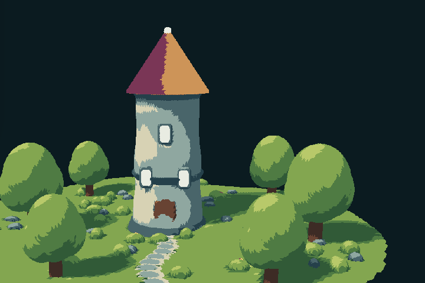

Torre
Torre de pedra com janelas acesas, jardim, árvores e caminho até a porta.
Explorar em 3D →Quatro cenas 3D em pixel-art que você gira com o mouse. Cada uma foi escrita em código e é formada por dezenas de milhares de Gaussian splats, pequenas manchas 3D com cor, forma e orientação.
arrastar gira · roda aproxima · botão direito move o foco

Torre de pedra com janelas acesas, jardim, árvores e caminho até a porta.
Explorar em 3D →
Uma árvore antiga 5/4 mais alta que a torre, com feixes de sol paralelos atravessando a copa.
Explorar em 3D →
Um lago de margem irregular com reflexo planar recalculado a cada ângulo da câmera.
Explorar em 3D →
Copa com mais ramos e folhas, preparada para o vídeo da câmera em arco.
Explorar em 3D →180 quadros renderizados pelo Ink Studio: a câmera percorre cerca de 198° em 12 segundos.
Formas como S.lathe (torre), S.ball (copas) e S.tube (troncos) descrevem a cena em JavaScript.
O motor Ink Studio amostra as superfícies, aplica a luz do sol e gera um splat com 16 números para cada ponto.
Um visualizador próprio projeta cada splat como uma elipse orientada. Sem bibliotecas e sem servidor.